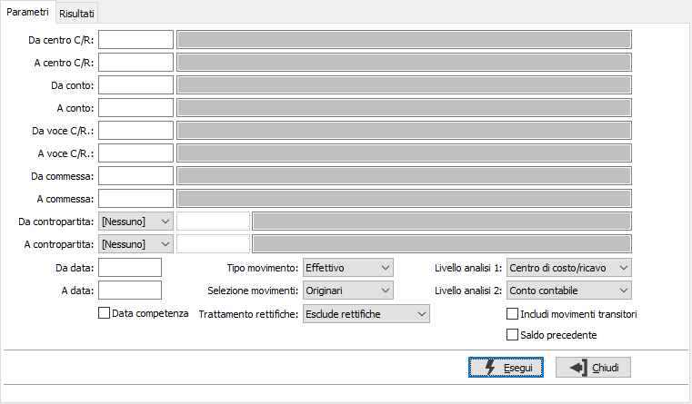
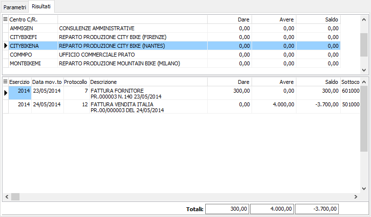

Analisi movimenti
Il programma consente di effettuare un'analisi dei movimenti di contabilità analitica in base a determinati criteri di selezione; nella sezione risultati sono attivi i tasti di stampa per produrre il relativo report.
Il programma si articola su due finestre video. La prima, Parametri, consente la definizione dei parametri di analisi.

DA CENTRO C/R.: eventuale codice del centro di costo/ricavo, presente in anagrafica, da cui si vuole iniziare la selezione di analisi. Confermando a vuoto, la selezione inizia dal primo codice valido. Sul campo sono attive le funzioni di ricerca (F9).
A CENTRO C/R.: eventuale codice del centro di costo/ricavo, presente in anagrafica, con cui si vuole terminare la selezione di analisi. Confermando a vuoto, la selezione termina con l’ultimo codice valido. Sul campo sono attive le funzioni di ricerca (F9).
DA CONTO: eventuale codice del sottoconto, presente in anagrafica, da cui si desidera iniziare la selezione di analisi. Confermando a vuoto, la selezione inizia con il primo codice valido. Sul campo sono attive le funzioni di ricerca (F9).
A CONTO: eventuale codice del sottoconto, presente in anagrafica, a cui si desidera terminare la selezione di analisi. Confermando a vuoto, la selezione termina con l’ultimo codice valido. Sul campo sono attive le funzioni di ricerca (F9).
DA VOCE C/R.: eventuale codice della voce di costo/ricavo, presente in anagrafica, da cui si vuole iniziare la selezione di analisi. Confermando a vuoto, la selezione inizia dal primo codice valido. Sul campo sono attive le funzioni di ricerca (F9) ed accesso interattivo alla tabella collegata (CTRL+W).
A VOCE C/R.: eventuale codice della voce di costo/ricavo, presente in anagrafica, con cui si vuole terminare la selezione di analisi. Confermando a vuoto, la selezione termina con l’ultimo codice valido. Sul campo sono attive le funzioni di ricerca (F9) ed accesso interattivo alla tabella collegata (CTRL+W).
DA COMMESSA: eventuale codice della commessa, presente in anagrafica, da cui si vuole iniziare la selezione di analisi. Confermando a vuoto, la selezione inizia dal primo codice valido. Sul campo sono attive le funzioni di ricerca (F9) ed accesso interattivo alla tabella collegata (CTRL+W).
A COMMESSA: eventuale codice della commessa, presente in anagrafica, con cui si vuole terminare la selezione di analisi. Confermando a vuoto, la selezione termina con l’ultimo codice valido. Sul campo sono attive le funzioni di ricerca (F9) ed accesso interattivo alla tabella collegata (CTRL+W).
DA CONTROPARTITA: tipo e codice della contropartita, da cui si vuole iniziare la stampa. Confermando a vuoto, la stampa inizia dal primo codice valido. Sul campo sono attive le funzioni di ricerca (F9).
A CONTROPARTITA: tipo e codice della contropartita, con cui si vuole terminare la stampa. Confermando a vuoto, la stampa termina con l'ultimo codice valido. Sul campo sono attive le funzioni di ricerca (F9).
DA DATA: eventuale data del movimento da cui deve iniziare l’analisi dei movimenti relativamente ai precedenti parametri di selezione. Confermando a vuoto, l’analisi inizia con il primo movimento valido.
A DATA: eventuale data del movimento con cui si desidera terminare l’analisi dei movimenti relativamente ai precedenti parametri di selezione. Confermando a vuoto, l’analisi si conclude con l'ultimo movimento valido.
DATA COMPETENZA: definisce se l'analisi deve riferirsi alle date dei movimenti oppure alle eventuali date di competenza inserite sulle singole righe dei movimenti. La spunta determina la selezione per competenza. Questa opzione è disponibile solo per gli utenti della versione Enterprise.
TIPO MOVIMENTO: definisce il tipo di movimenti da analizzare. Valori ammessi: Effettivi; Previsionali.
SELEZIONE MOVIMENTI: definisce quali movimenti devono essere elaborati. Valori ammessi: Originari; Derivati; Tutti.
LIVELLO DI ANALISI 1: definisce il primo campo di raggruppamento. Valori possibili:
Centro C/R.
Conto contabile
Voce C/R.
Commessa
Contropartita
LIVELLO DI ANALISI 2: definisce il secondo campo di raggruppamento. Valori possibili:
Centro C/R.
Conto contabile
Voce C/R.
Commessa
Contropartita
TRATTAMENTO RETTIFICHE: definisce come e se includere nell'analisi i movimenti di rettifica, cioè quei movimenti in cui la data del movimento e l'esercizio di competenza differiscono. Valori ammessi: Esclude rettifiche; Include rettifiche; Solo rettifiche.
INCLUDI MOVIMENTI TRANSITORI: definisce se includere nell'analisi i movimenti relativi a centri C/R. transitori; spuntare la casella per includere i movimenti transitori.
SALDO PRECEDENTE: definisce se conteggiare il totale dei movimenti antecedenti alla prima data inserita ma comunque facenti parte dell’esercizio di inizio analisi; spuntare la casella per calcolare i totali precedenti.
Confermando tramite pressione del pulsante Esegui, viene avviata la selezione e richiamata la sezione Risultati.

La finestra video è articolata su due sezioni: la sezione superiore elenca i centri di costo/ricavo, oppure i sottoconti se ho richiesto un ordinamento per sottoconto, selezionati ed i relativi importi.
La sezione inferiore elenca invece i movimenti relativi al centro di costo/ricavo o sottoconto, che è quello contrassegnato dalla freccia, a sinistra del rigo nella sezione superiore. In questa sezione, con doppio clic del mouse sulla riga è possibile richiamare la manutenzione del movimento, con il tasto destro è possibile esportare il contenuto in Excel o copiarlo negli appunti.
Con gli appositi pulsanti di anteprima di stampa e stampa è possibile produrre il report a stampa.